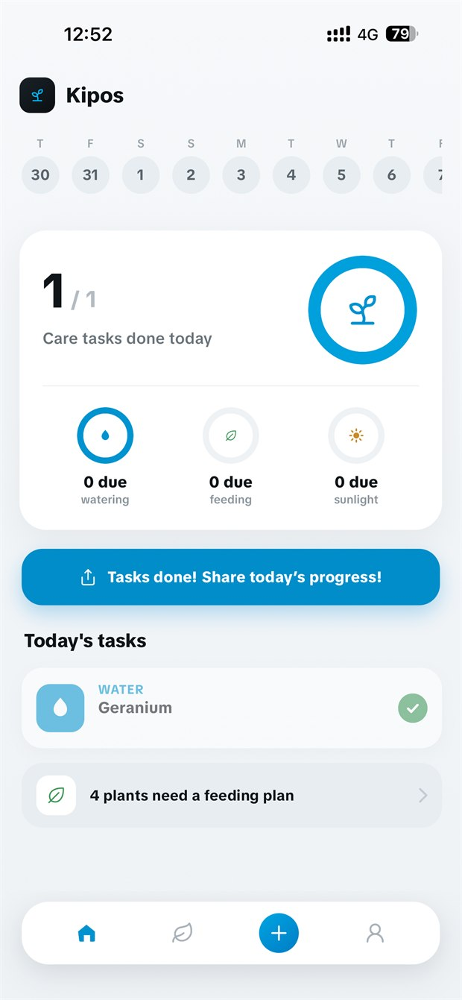
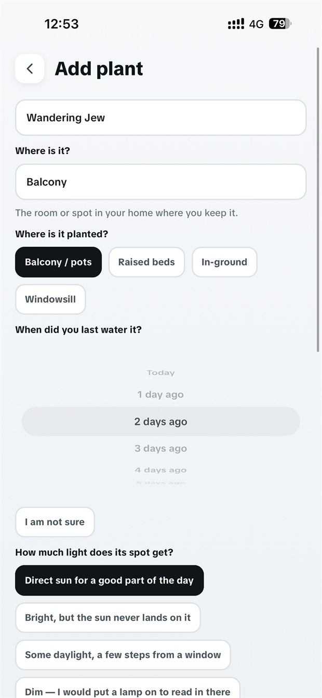
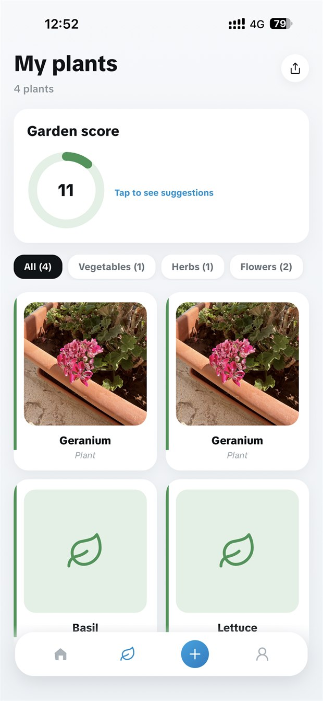
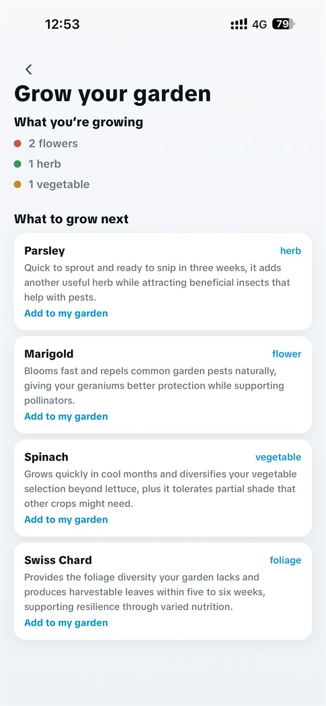

Growth phases
Record the phase each plant is in, then add a photo or note when something changes.
Garden tracker for iPhone
Kipos keeps each plant's phase, care, photos and notes together. See what changed, what needs attention today and how your garden got here.
Download on the App Store
A record you can use
A reminder tells you what is due. A record also shows the phase, photos, notes and care that led to today.
Scan a plant or add it by name. Record its location, growing setup and light so its history begins with useful context.
Keep the plant's current phase, photos, notes and completed care in one place. Its timeline becomes clearer as the season moves.
Daily tasks keep care moving. Plant scores, streaks and the Garden Score give you a quick view across the collection.
What's inside
Record the phase each plant is in, then add a photo or note when something changes.
Completed tasks stay connected to the plant, so you can look back instead of relying on memory.
One number for how the whole garden is doing, with suggestions for what would move it most. Tap it to see what to fix first.
Add photos and observations to a plant card. Over time, they show the changes a task list cannot.
Turn a good day, a streak or the whole garden into a card you can post. Built to look right without any editing.
Feeding is its own schedule, not an afterthought bolted onto watering. Set a cadence per plant and Kipos reminds you when it is due.
Set it up once
A plant on a shaded balcony does not want the same schedule as one on a south-facing sill. Kipos asks the questions that change the answer.

Share your garden
Every plant in one place, sorted into vegetables, herbs and flowers, with a garden score across the top and a share button that turns it into a card.

Grow the collection
Kipos looks at what you already grow and suggests what would go well next. Each one says why, in a sentence, rather than handing you a list to go and research.

Get Kipos
Identify plants, follow care reminders, save growth photos and keep your garden history in one place.
Help
iPhone. It is not built for iPad, and there is no released Android version.
Yes. Your garden, care history and photos are saved to your account so they survive a new phone. You can sign in with Apple, with Google, or with an email address and password.
Now. Kipos is out on the App Store for iPhone — the download button at the top of this page takes you straight to it.
Compare and learn
The comparisons and alternatives use current public product listings and say where another app is the stronger choice. The guides work with a notebook, a spreadsheet or Kipos.
Daily care streak · Watering log · Photo journal · Garden score · Shareable cards
Download on the App Store